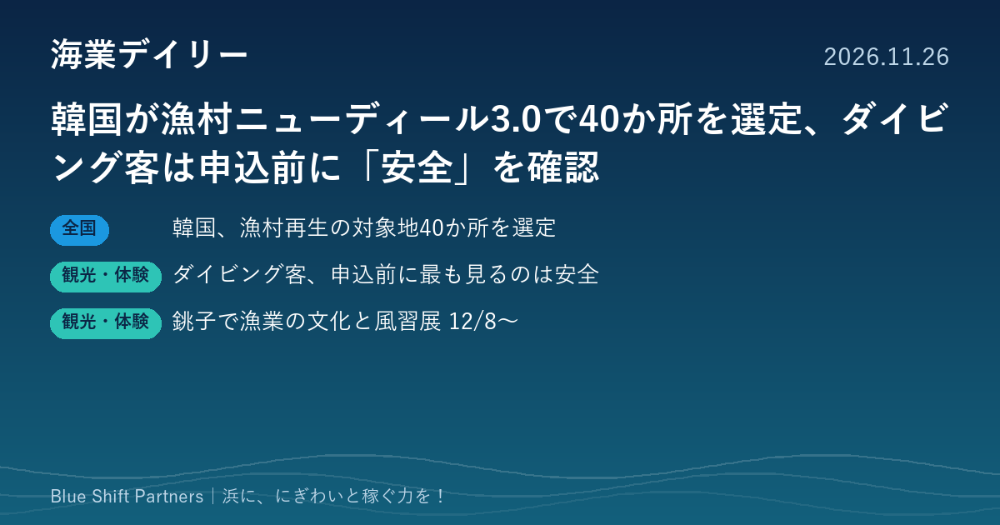

2026.11.26
韓国が漁村ニューディール3.0で40か所を選定、ダイビング客は申込前に「安全」を確認

韓国の海洋水産部が、漁村の再生事業「漁村ニューディール3.0」の来年度の対象地40か所を選びました。国内では、ダイビング旅行会社の調査で、申し込む前に安全管理を確かめたい人が最も多いことが分かりました。銚子では、万祝や大漁旗など漁業の文化を紹介する展示が12月8日から始まります。
韓国・海洋水産部、「漁村ニューディール3.0」の2027年度対象地40か所を選定 観光拠点型も
韓国の海洋水産部は11月9日、漁村の再生事業「漁村ニューディール3.0」の2027年度の対象地として40か所を選んだと発表しました。内訳は、地域経済の拠点をつくる「漁村経済飛躍型」が5か所、生活サービスの拠点を整える「漁村回復型」が35か所で、全国11の広域自治体から71か所の応募がありました。経済飛躍型には、リゾート型の複合施設と組み合わせた滞在型観光の拠点や、海洋レジャーの機能を備えた複合施設の計画が含まれています。あわせて、2028年度の公募から事業の類型を2つから4つに増やし、完成した施設の活用実績を評価に反映するなど、整備後の運営の管理を強める方針も示しました。
ここがポイント：韓国では、施設をつくった後に使われているかどうかまで評価に組み込もうとしています。日本の海業でも、整備した施設を誰がどう運営して稼ぐかを計画の段階から詰めておくことが、同じように問われていきます。
出典：海洋水産部（韓国）／韓国政府 政策ポータル korea.kr「来年の『漁村ニューディール3.0』事業の対象地40か所を選定」（2026-11-09）
ダイビングツアーを申し込む前に確かめたいことは「安全管理」が最多 ダイビング専門の旅行会社が200人に調査
ダイビング専門の旅行会社、トラベルネットサービス有限会社（名古屋市）は11月24日、ダイビングツアーに参加・検討したことがある人などに聞いた調査の結果を発表しました。全国の20〜69歳の200人へのオンライン調査で、申し込む前に最も確かめたいことは「安全管理や緊急時・海況不良時の対応」が23.5％で最も多く、「料金の総額や追加費用」が16.5％で続きました。旅行会社に相談するときに安心できる対応でも、安全管理の説明が29.5％で最も多い結果でした。
ここがポイント：漁協や浜の事業者がダイビングや海の体験を受け入れるときは、安全の体制と海が荒れたときの対応、追加費用の有無を、予約の前に分かる形で示しておくことが、選ばれる条件になりそうです。
出典：トラベルネットサービス有限会社（PR TIMES）「200人に聞いた！ダイビングツアーを申し込む前に確認したいことは？」（2026-11-24）
銚子市ジオパーク・芸術センターで「漁業にまつわる文化と風習」展、万祝や大漁旗を紹介（12/8〜1/10、入館無料）
銚子市観光協会は11月25日、銚子市ジオパーク・芸術センター（銚子市八木町、旧第八中学校）で、2026年12月8日から2027年1月10日まで「漁業にまつわる文化と風習」の展示が開かれると案内しました。漁業の町・銚子で、万祝（まいわい）や大漁旗など漁業とともに生まれた文化や風習を紹介します。開館は9時から17時で、月曜日と年末年始（12月28日〜1月3日）は休館、入館は無料です。問い合わせ先は銚子市社会教育課文化財・ジオパーク室です。
ここがポイント：万祝や大漁旗は、浜の歴史を伝える観光の資源にもなります。漁村観光や体験の受け入れを考える地域にとって、地元の漁業文化をどう見せるかの参考になります。
出典：一般社団法人銚子市観光協会「漁業にまつわる文化と風習（12/8～1/10）」（2026-11-25）
韓国の漁村再生は、施設をつくるだけでなく、使われ続けるかを評価に組み込む方向へ進んでいます。ダイビング客の調査でも、選ばれる決め手は「安心して申し込めるか」でした。整備も体験も、運営と情報の出し方まで含めて設計することが、浜の稼ぐ力につながります。